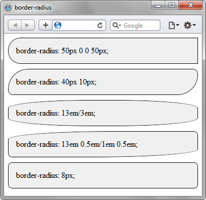

Устанавливает радиус скругления уголков рамки. Если рамка не задана, то скругление также происходит и с фоном.
Синтаксис
border-radius: <радиус>{1,4} [ / <радиус>{1,4}]
| Число значений | Результат |
|---|---|
| 1 | Радиус указывается для всех четырех уголков. |
| 2 | Первое значение задает радиус верхнего левого и нижнего правого уголка, второе значение — верхнего правого и нижнего левого уголка. |
| 3 | Первое значение задает радиус для верхнего левого уголка, второе — одновременно для верхнего правого и нижнего левого, а третье — для нижнего правого уголка. |
| 4 | По очереди устанавливает радиус для верхнего левого, верхнего правого, нижнего правого и нижнего левого уголка. |
Пример:
<!DOCTYPE html>
<html>
<head>
<meta charset="utf-8">
<title>border-radius</title>
<style>
.radius {
background: #f0f0f0;
border: 1px solid black;
padding: 15px;
margin-bottom: 10px;
}
</style>
</head>
<body>
<div style="border-radius: 50px 0 0 50px;" class="radius">
border-radius: 50px 0 0 50px;
</div>
<div style="border-radius: 40px 10px" class="radius">
border-radius: 40px 10px;
</div>
<div style="border-radius: 10em/1em;" class="radius">
border-radius: 10em/1em;
</div>
<div style="border-radius: 13em 0.5em/1em 0.5em;" class="radius">
border-radius: 13em 0.5em/1em 0.5em;
</div>
<div style="border-radius: 8px;" class="radius">
border-radius: 8px;
</div>
</body>
</html>
Результат применения различных значений свойства border-radius показан ниже.
